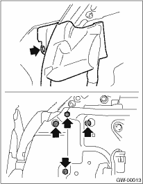
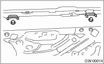
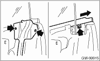
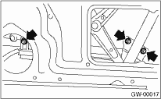

1. Remove the front door trim. 
2. Remove the front speaker.
3. Remove the sealing cover.
4. Remove the outer mirror assembly.
5. Remove the front end of door weather strip and gusset.

6. Remove the stabilizer.

7. Remove the rear end of door weather strip and weather strip outer.

8. Operate the power window switch to move glass to position shown in the figure, and then remove the three nuts from the service holes.

9. Remove the door glass.
CAUTION:
• Since the gear may be disengaged, do not turn regulator in the closing direction after removing glass.
• Avoid impact and damage to the glass.